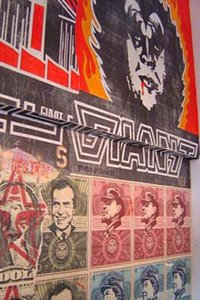
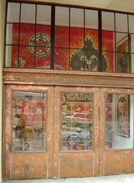
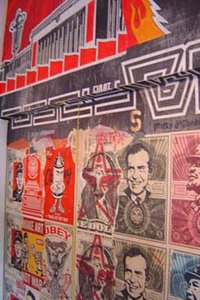

Kantor Gallery Window
From The Giant: The Definitive Obey Giant Site
A Shepard Fairey art exhibit that ran from July 12th, 2004 to September 12th, 2004 at the Kantor Gallery Chelsea, 10th Avenue Window at 259 West 10th Avenue in NYC.
About the Kantor Gallery:
A Los Angeles native, Niels Kantor has become one of the premier contemporary and modern fine art dealers on the West Coast. Kantor Gallery was opened by Niels' father, Paul Kantor, in Los Angeles in 1951. Kantor Gallery was the first to exhibit many important artists from the East Coast and Europe in Los Angeles. The gallery was the first West Coast gallery to show Robert Motherwell, Hans Hoffman, Adolph Gottlieb, Willem de Kooning, Richard Diebenkorn, and Man Ray. In 1994 Niels moved the Kantor Gallery to West Hollywood (and later Melrose Ave) and produced exhibitions by Andy Warhol, Jean-Michel Basquiat, and Keith Haring.
In Spring of 2000, New York-based Zach Feuer opened LFL Gallery in a small fourth-floor space on 26th Street. Since opening, LFL has undergone constant expansion and growth to bring it to its current ground floor location on West 24th Street, at the epicenter of New York's Chelsea art district. Feuer has developed a reputation for discovering and developing new talent. Artists represented by Feuer have received a tremendous amount of critical and curatorial attention in the past few years. For more information, visit www.zachfeuer.com.
The Kantor / Feuer Gallery will bring emerging New York artists to the West Coast and provide them with a gallery space as well as a studio and apartment near the gallery to produce their work. This bi-coastal approach to art will introduce the West Coast art community to promising young artists as well as providing a different environment for young artists to work. This will hopefully produce a dialogue between emerging artists in New York and Los Angeles. Zach Feuer Gallery (LFL)'s program in New York, will remain unchanged for the time being and will continue to exhibit an international mix of artists, with hopes of introducing more West Coast artists to New York at its current location.
The opening exhibit of the Kantor / Feuer Gallery will be an installation by Phoebe Washburn and will coincide with her show at the Hammer Museum / UCLA. Phoebe Washburn creates installations of painted bulk and discarded material pieces on a monumental level. Phoebe Washburn was a MFA graduate of the School of Visual Arts. Past solo exhibitions include P.S.1/MOMA in Queens (solo exhibition and Greater NY), Kunsthalle St Gallen, St Gallen, Switzerland, Sculpture Center, Long Island City, NY, The Weatherspoon Art Gallery, Greensboro, NC , Rice University Gallery, Rice University, Houston, TX, Center for Curatorial Studies Museum, Bard College, Annandale-on-Hudson, NY, Zach Feuer/ LFL Gallery.
During the first year Kantor / Feuer Gallery will exhibit Daniel Hesidence, Håvard Homstvedt, Tim Lokiec, Simone Shubuck, Ben Degan, Tom McGrath, Chris Hammerlein, and Phoebe Washburn.
Kantor / Feuer will also open an un-staffed installation space in Chelsea at 259 10th Avenue between 25th and 26th Streets in New York that will provide an opportunity for young artists to make and display works that otherwise wouldn't fit into a commercial gallery setting. Artists scheduled for exhibits in the window are Charlotte Becket, Johannes Van der beek and Misaki Kawai.
A web site is currently being produced and will go live in June. The site will contain extensive documentation of all exhibitions and writings concerning the artists.
Pictures from the Kantor Gallery Window:
|  |  |  |
{kind=link}
{kind=link}
{kind=link}